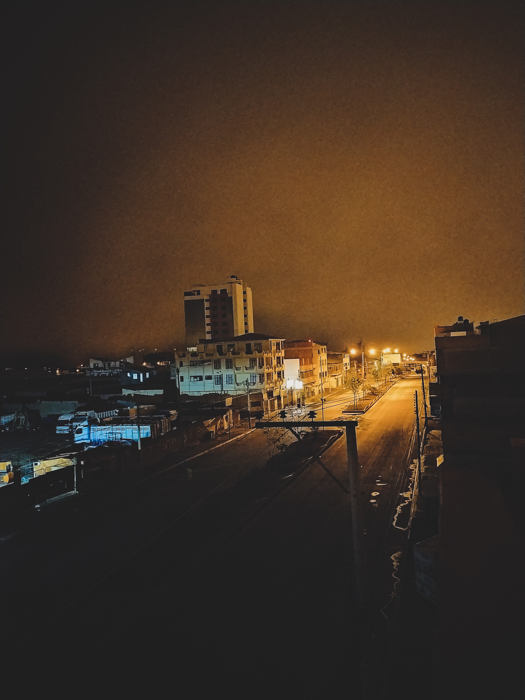
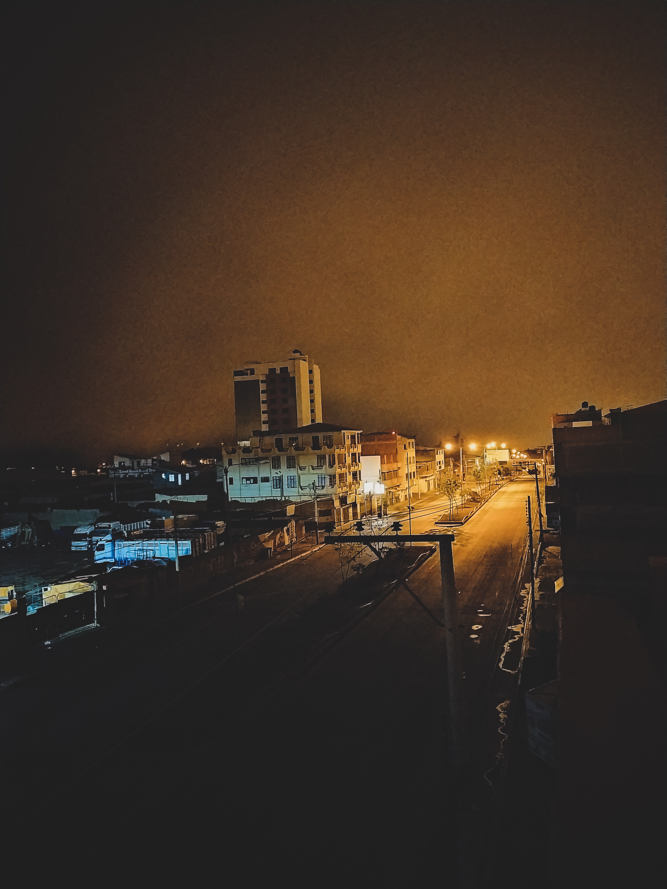
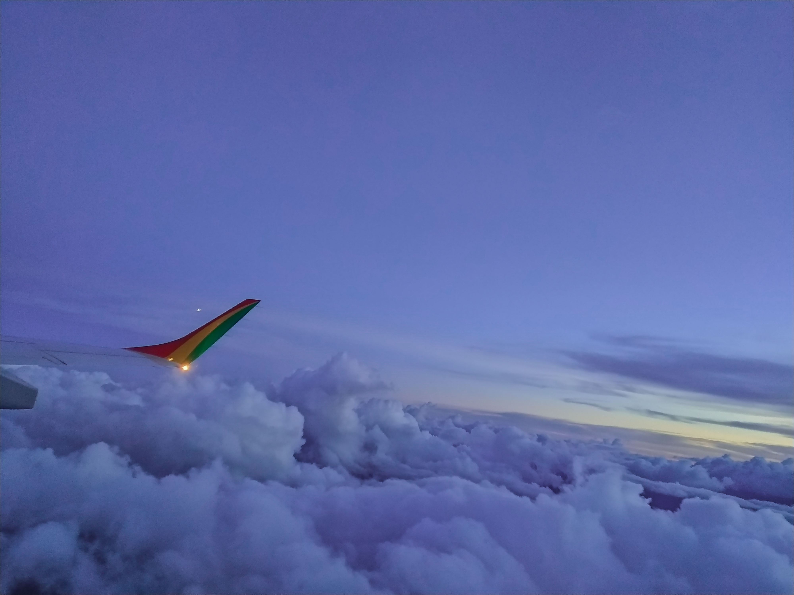
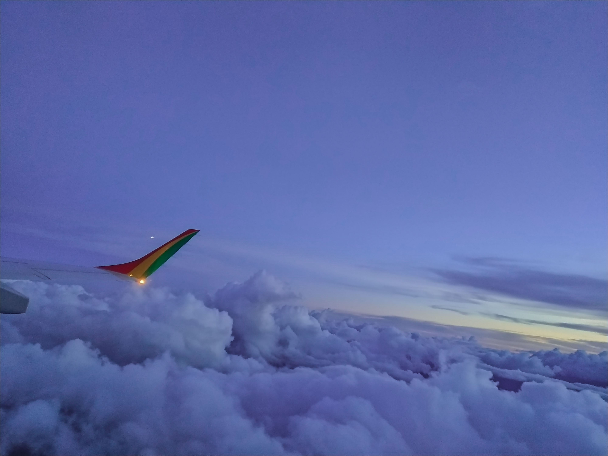

Mis Hobbies
Más sobre Mis Hobbies
A lo largo de los años, he cultivado varios hobbies que disfruto mucho en mi tiempo libre. Estos pasatiempos no solo me brindan entretenimiento, sino también oportunidades para aprender y crecer personalmente.
-
Voleibol
El voleibol es uno de mis deportes favoritos. Disfruto tanto jugando en equipos organizados como en partidos casuales con amigos (wally). Lo practico desde secundaria, y de este deporte he aprendido lo que es el trabajo en equipo y la coordinación. Actualmente he dejado de entrenar debido a la dedicación en mi carrera, pero espero pronto retomar mis entrenamientos.
-
Videojuegos
Desde pequeño, los videojuegos han sido una de mis mayores pasiones. Me gusta explorar diferentes géneros, desde juegos de estrategia hasta aventuras de acción. Además de ser una fuente de entretenimiento, me han ayudado a conocer muchas personas y a desconectarme un momento de la vida real, para poder disfrutar ya sea risas o frustraciones frente a la pantalla.
-
Fotografía
.jpg)
 

 

La fotografía es la forma de arte que más me gusta, me permite capturar y compartir la belleza del mundo a mi alrededor. Disfruto experimentando con diferentes técnicas y estilos, y siempre estoy buscando nuevas formas de mejorar mis habilidades fotográficas. Aunque debido al alto costo que representan los equipos de calidad y profesionales, me dedico más a hacerlo de forma amateur y con mis propias herramientas.
-
Edición de Videos


La edición de videos es un hobby que complementa mi pasión por la fotografía. Me encanta crear contenido visualmente atractivo, ya sea para proyectos personales o para compartir en redes sociales. Este pasatiempo me permite ser creativo y experimentar con diferentes efectos, técnicas y guardar con más cariño memorias capturadas con la cámara.
-
Bailar
Bailar es una de mis actividades favoritas para mantenerme activo y expresar mis emociones. Si bien no soy el mejor bailando, me gusta hacerlo por diversión y para disfrutar con mis amigos en momentos de goce.
-
Deportes de Velocidad
Los deportes de velocidad son unas de mis más grandes pasiones, como la Fórmula 1 y el rally. Me encanta la emoción y la adrenalina de las carreras, así como la tecnología y la estrategia que se esconden detrás de cada competencia. Este gusto lo tuve de mi padre que siempre ha trabajado con el tipo de autos destinado a estas competencias, y si bien yo no soy un participante de las mismas, soy un gran fanático de todo lo que representa este deporte.
PD: Actualmente me encuentro ahorrando para poder participar en competencias regionales y obtener mi propio auto de carreras.